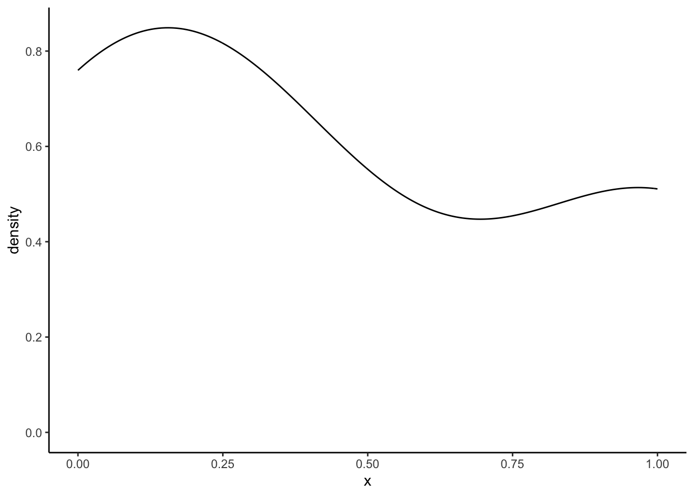

library(ggplot2)
df <- data.frame(
x = c(0, 1),
density = 1
)
dens0_1 <- ggplot(df, aes(x = x, y = density)) +
geom_line(colour = '#67a9cf') +
annotate("text", x = 0, y = 1, label = "density(0, 1)",
colour = '#67a9cf', hjust = 0, vjust = 1.2) +
scale_x_continuous(breaks = seq(0, 1, 0.1)) +
theme_classic()
dens0_1Recreating density plots ‘by hand’
R
Visualisation
Where I attempt to understand density plots and get stuck on Fast Fourier Transforms.
Often, in my visualisations, I use density plots in one way or another, for example through violin plots. I roughly understand what they mean, but I want to be able to calculate a density plot by hand. Just the once, so I will never have to do it again, and know that in principle I will be able to do it. Learning about them also helps in understanding the distinctions between dunif, punif, qunif, and runif (or dnorm, pnorm, qnorm, and rnorm or dexp, pexp, qexp, and rexp et cetera)
Understanding the uniform (density) distribution
density(min = 0, max = 1)
When generating generating random numbers we often do so from a uniform distribution between 0 and 1. Any number between 0 and 1 occurs equally frequently. As we learn from ?qunif, the density function of the uniform distribution is described by:
\[f(x) = \frac{1}{max(x) - min(x)}\]
Thus, the density function in this case, for all x’s is \(f(\text{for all x}) = \frac{1}{1 - 0} = \frac{1}{1} = 1\) (I am pretty sure there exists a mathematical symbol for “for all x”, but I do not know it). Let’s draw the function:
By definition, for any density curve, the sum under the area of the “curve” adds up to 1. Let’s check: the total area under the curve is the width, which equals 1 (from 0 to 1) times the height, which also equals 1 (for all x); thus, 1 x 1 is 1. Score!
R could have told us this through:
punif(1, min = 0, max = 1)[1] 1Now, something slightly more complex. What is the chance of having a number between 0.7 and 0.8?
dens0_1 <- dens0_1 +
geom_area(aes(x = c(0.7, 0.8), y = c(1, 1)), fill = '#67a9cf', alpha = 0.9)
dens0_1 +
geom_segment(aes(x = 0.7, xend = 0.8, y = 0.02, yend = 0.02),
arrow = arrow(ends = "both", type = "closed",
length = unit(0.2, "cm")), colour = "grey") +
geom_segment(aes(x = 0.82, xend = 0.82, y = 0, yend = 1),
arrow = arrow(ends = "both", type = "closed",
length = unit(0.2, "cm")), colour = "grey") +
annotate("text", x = 0.75, y = 0, label = "0.1", vjust = 1) +
annotate("text", x = 0.82, y = 0.5, label = "1", hjust = 0) The area under the curve is 0.1 * 1 = 0.1. Through R, this could have been calculated via:
punif(0.8, min = 0, max = 1) - punif(0.7, min = 0, max = 1)[1] 0.1density(min = 1, max = 5)
Ok, so what if we had used a density function from 1 to 5? Thus, the density function in this case, for all x’s is \(f(\text{for all x}) = \frac{1}{5 - 1} = \frac{1}{4} = 0.25\). The area under the curve should be 1: the area under the curve from density(min = 1, max = 5) is the width (from 1 to 5 is a width of 4) times height (0.25 for all); thus, 4 x 0.25 = 1. Check.
Let’s draw this function in the same graph, and let’s also draw the area under the curve between x = 3 and x = 4:
df2 <- data.frame(
x = c(1, 5),
density = c(0.25, 0.25)
)
dens0_1 +
geom_line(data = df2, colour = '#ef8a62') +
annotate("text", x = 1, y = 0.25, label = "density(1, 5)",
colour = '#ef8a62', hjust = 0, vjust = 1.2) +
geom_area(aes(x = c(3, 4), y = c(0.25, 0.25)), fill = '#ef8a62', alpha = 0.9) +
geom_segment(aes(x = 3, xend = 4, y = 0.02, yend = 0.02),
arrow = arrow(ends = "both", type = "closed",
length = unit(0.2, "cm")), colour = "grey") +
geom_segment(aes(x = 4.1, xend = 4.1, y = 0, yend = 0.25),
arrow = arrow(ends = "both", type = "closed",
length = unit(0.2, "cm")), colour = "grey") +
annotate("text", x = 3.5, y = 0, label = "1", vjust = 1) +
annotate("text", x = 4.1, y = 0.125, label = "0.25", hjust = 0) +
scale_x_continuous(breaks = seq(0, 5, 1)) +
scale_y_continuous(breaks = seq(0, 1, 0.25),
limits = c(-0.015, 1)) The area under the curve from density(min = 1, max = 5), and the relative frequency of having a number between 3 and 4, is the width (from 3 to 4 is a width of 1) times height (0.25 for all); thus, 1 x 0.25 = 0.25. 25%. Makes sense.
R would have gotten this for us through:
punif(4, min = 1, max = 5) - punif(3, min = 1, max = 5)[1] 0.25dunif vs punif vs qunif vs runif
For the uniform function, we calculated the density ourselves which is identical for each “x”. We could have let R do this for us using dunif:
For the uniform(min = 0, max = 1) distribution:
x <- seq(0, 1, 0.1) # for each step of 0.1 between values 0 and 1
# calculate density
dunif(x, min = 0, max = 1) [1] 1 1 1 1 1 1 1 1 1 1 1For the uniform(min = 1, max = 5) distribution:
x <- seq(0, 5, 1) # for each step of 1 between values 0 and 5
# calculate density
dunif(x, min = 1, max = 5)[1] 0.00 0.25 0.25 0.25 0.25 0.250 for x = 0, as it should!
We’ve already seen punif in action, but let’s see it again. Let’s find out the probability that a number is between 0 and 0.35 for the uniform(min = 0, max = 1) distribution:
punif(q = 0.35, min = 0, max = 1)[1] 0.35And let’s find out the probability that a number is between 2.5 and 4.2 for the uniform(min = 1, max = 5) distribution:
punif(q = 4.2, min = 1, max = 5) - # probability for numbers between 1 and 4.2
punif(q = 3.5, min = 1, max = 5) # probability for numbers between 1 and 2.5 [1] 0.175The qunif function goes from a probability back to the “x”. For example, which “x” corresponds to a probability of 0.5. Thus, which area under the curve, starting from the minimum of x to the x we are looking for equals 0.5.
For the unif(min = 0, max = 1) distribution:
qunif(p = 0.5, min = 0, max = 1)[1] 0.5For the unif(0.5, min = 1, max = 5) distribution:
qunif(p = 0.5, min = 1, max = 5)[1] 3Or let’s say we are interested in the top 1% of x’s from the unif(min = 1, max = 5) distribution:
qunif(p = 0.99, min = 1, max = 5)[1] 4.964.96 and higher! This might make more sense when we talk about the normal distribution (qnorm).
runif lets you draw random numbers from said distribution. Let’s draw 11 numbers from the unif(min = 1, max = 5) distribution:
runif(n = 11, min = 1, max = 5) [1] 2.201886 3.594314 1.285670 1.266898 1.843133 3.455094 1.605378 3.898504
[9] 4.929507 3.570989 3.762690Alright, easy enough. Let’s move to the (standard) normal distribution, because that is the one that is used for violinplots and the like.
Understanding the normal (density) distribution
The normal distribution is defined by the mean (\(\mu\)) and the standard deviation (\(\sigma\)), and its density distribution (better yet: probability density function) is defined by:
\[f(x) = \frac{1}{{\sigma \sqrt {2\pi } }}e^{{{ -( {x - \mu })^2} / 2\sigma^2} }\] With the standard normal distribution, \(\mu = 0\) and \(\sigma = 1\), in which case the above function reduces to:
\[f(x) = \frac{1}{{\sqrt {2\pi } }}e^{{{ -\frac{1}{2}x} } }\] Let’s turn the probability density function for a normal distribution into an R-function:
pdf_norm <- function(x, mean = 0, sd = 1) {
(1 / (sd * sqrt( 2 * pi ))) * exp( (-1 * (x - mean)^2) / (2 * sd^2) )
}Let’s see if it works:
pdf_norm(0, mean = 0, sd = 1) # obviously mean = 0, sd = 1 not necessary[1] 0.3989423Let’s draw it:
library(tibble)
# I use tibble here so that y can be calculated immediately
df_norm <- tibble(x = seq(-5, 5, 0.01), density = pdf_norm(x))
dens_norm <- ggplot(df_norm, aes(x = x, y = density)) +
geom_path(colour = '#67a9cf', size = 3) +
theme_classic()Warning: Using `size` aesthetic for lines was deprecated in ggplot2 3.4.0.
ℹ Please use `linewidth` instead.dens_norm# c(, '#ef8a62')We’ve created our own probability density function for the normal distribution in pdf_norm, but we did not have to because this is exactly what is stored in the function dnorm. Let’s see:
# Create y-values on the base of dnorm
df_norm2 <- tibble(x = seq(-5, 5, 0.01),
density = dnorm(x, mean = 0, sd = 1))
dens_norm +
geom_path(data = df_norm2,
aes(y = density), colour = '#ef8a62', linetype = "dashed", size = 3)Now, through dnorm, we can calculate the highest density value which lies at x = 0:
dnorm(x = 0, mean = 0, sd = 1)[1] 0.3989423Let’s visualise:
# We're using the results from dnorm here (y2)
dens_norm2 <- ggplot(df_norm2, aes(x = x, y = density)) +
geom_path(colour = '#ef8a62', size = 2) +
scale_x_continuous(breaks = seq(-5, 5, 1)) +
theme_classic()
dens_norm2 +
annotate("point", x = 0, y = dnorm(x = 0, mean = 0, sd = 1),
colour = '#67a9cf') +
annotate("text", x = 0, y = dnorm(x = 0, mean = 0, sd = 1),
label = dnorm(x = 0, mean = 0, sd = 1), vjust = 0, colour = '#67a9cf') Now, we can look for probabilities. This time, probabilities under the curve are not as easily calculated by hand, but we’ve seen above that we could get these probabilities through punif for the uniform distribution, and in the same way we can use pnorm to find probabilities for the normal distribution! Let’s try finding the probability of finding an x equal to or below -1:
pnorm(q = -1, mean = 0, sd = 1)[1] 0.1586553dens_norm2 +
geom_area(data = subset(df_norm2, x <= -1),
fill = '#ef8a62', alpha = 0.7) +
annotate("text", x = -1, y = 0.05,
label = round(pnorm(q = -1, mean = 0, sd = 1), 4),
hjust = 1, colour = "white") Or between 0 and 2:
p_0_2 <- pnorm(q = 2, mean = 0, sd = 1) - pnorm(q = 0, mean = 0, sd = 1)
p_0_2[1] 0.4772499dens_norm2 +
geom_area(data = subset(df_norm, x >= 0 & x <= 2),
fill = '#ef8a62', alpha = 0.7) +
annotate("text", x = 1, y = 0.05,
label = round(p_0_2, 4), colour = "white") Density plots
We’ve did the ground work for the density plots. Now we try to understand how we get something like this:
df_dens <- data.frame(x = c(0, 0.3, 1))
ggplot(df_dens, aes(x = x), colour = '#67a9cf', size = 2) +
geom_density() +
theme_classic()
It’s important to realise that under hood something like this happens:
ggplot(df_dens, aes(x = x)) +
geom_density(
kernel = "gaussian",
bw = "nrd0",
colour = '#67a9cf',
size = 2
) +
theme_classic()These arguments (kernel = "gaussian" and bw = "nrd0") are passed to the function density():
density(x = df_dens$x, kernel = "gaussian", bw = "nrd0")
Call:
density.default(x = df_dens$x, bw = "nrd0", kernel = "gaussian")
Data: df_dens$x (3 obs.); Bandwidth 'bw' = 0.2696
x y
Min. :-0.8087 Min. :0.005535
1st Qu.:-0.1544 1st Qu.:0.103430
Median : 0.5000 Median :0.447735
Mean : 0.5000 Mean :0.381337
3rd Qu.: 1.1544 3rd Qu.:0.545436
Max. : 1.8087 Max. :0.848818 # same as density(x = df_dens$x)Just to show that density leads to the same graph as geom_density:
dens_calc <- density(x = df_dens$x)
df_dens2 <- data.frame(x = dens_calc$x, density = dens_calc$y)
ggplot(df_dens, aes(x = x)) +
geom_density(colour = '#67a9cf', size = 2) +
geom_density(data = df_dens2, stat = "identity",
aes(x = x, y = density),
colour = '#ef8a62', size = 2, linetype = "dashed") +
theme_classic()To arrive at these results, it is important to understand the kernel = "gaussian" and bw = "nrd0" arguments.
Kernel density distributions
The density estimation happens through something called a a kernel density distribution. This is defined by:
\[ \hat{f}_{h}(x)=\frac{1}{nh}\sum_{i=1}^nK(\frac{x-x_i}{h}) \]
In the above function, K, is the kernel, some non-negative density distribution function, like the ones we have defined above. h is the bandwidth, a positive number that effectively defines the smoothness of the graph. The argument kernel = refers to K and the argument bw = refers to the bandwidth h. As you might guess, the kernel = gaussian" says that we are using the gaussian or normal density distribution as the kernal K!
At this point, I was still a bit lost, but following this great blogpost I understood more. Let’s first assume a bandwidth of 1, and a sample of three numbers from a population {5, 7, 8}.
To build a kernel density estimation (using the normal density distribution) for a sample, we need to perform two steps:
For each element in the sample, draw a normal distribution where the sample element is the mean, and the variance is defined by the square of the bandwidth, \(h^2\).
Sum up all the normal distributions from step 1 and divide the sum by
nh, which is equal tonin this case, because we defined the bandwidth as 1.
So, below we’ll plot three normal distributions: \(\mathcal{N}(5, 1)\), \(\mathcal{N}(7, 1)\), and \(\mathcal{N}(8, 1)\), plus its sum divided by three (nh) to arrive at the overall density distribution.
df <- tibble(
x = seq(0, 15, 0.01),
norm_5 = dnorm(x, mean = 5, sd = 1),
norm_7 = dnorm(x, mean = 7, sd = 1),
norm_8 = dnorm(x, mean = 8, sd = 1),
norm_sum = (norm_5 + norm_7 + norm_8) / 3
)
kernel <- ggplot(df, aes(x = x)) +
geom_line(aes(y = norm_5), colour = '#ef8a62', size = 2) +
geom_line(aes(y = norm_7), colour = "#a83299", size = 2) +
geom_line(aes(y = norm_8), colour = '#67a9cf', size = 2) +
geom_line(aes(y = norm_sum), colour = "darkgrey", size = 2) +
labs(y = "density") +
theme_classic()
kernelHow does this one stack up to the `geom_density’-distribution?
kernel +
geom_density(
data = data.frame(x = c(5, 7, 8)),
bw = 1, # remember we used a bandwidth of 1!
colour = '#f7f7f7', linetype = "dashed", size = 2
)SUCCESS!
However, normally we would have geom_density calculate the bandwidth (bw) for us. Let’s see
ggplot(data = data.frame(x = c(5, 7, 8)), aes(x = x)) +
geom_density(bw = 1, colour = "darkgrey", size = 2) +
geom_density(size = 2) + # currently unknown bandwidth
theme_classic() +
scale_x_continuous(limits = c(0, 15))Similar but not the same, and that’s because a different binwidth is used. Which binwidth? geom_density uses density. So let’s see what density gives us:
density(x = c(5, 7, 8))
Call:
density.default(x = c(5, 7, 8))
Data: c(5, 7, 8) (3 obs.); Bandwidth 'bw' = 0.8087
x y
Min. : 2.574 Min. :0.001845
1st Qu.: 4.537 1st Qu.:0.033991
Median : 6.500 Median :0.151694
Mean : 6.500 Mean :0.127113
3rd Qu.: 8.463 3rd Qu.:0.185661
Max. :10.426 Max. :0.273176 So a bandwidth equal to 0.8087322. Let’s validate:
ggplot(data = data.frame(x = c(5, 7, 8)), aes(x = x)) +
geom_density(bw = density(x = c(5, 7, 8))$bw,
colour = "darkgrey", size = 2) +
geom_density(size = 2, linetype = "dashed") + # currently unknown bandwidth
theme_classic() +
scale_x_continuous(limits = c(0, 15))Success, yet again.
How did geom_density, or better yet density arrive at 0.8087322? This is where the other argument bw = "nrd0" comes in. When using density(kernel = "gaussian"), the default way to estimate the bandwidth is through the argument bw = "nrd0". The help function further tells us that:
“bw.nrd0 implements a rule-of-thumb for choosing the bandwidth of a Gaussian kernel density estimator. It defaults to 0.9 times the minimum of the standard deviation and the interquartile range divided by 1.34 times the sample size to the negative one-fifth power (= Silverman’s ‘rule of thumb’, Silverman (1986, page 48, eqn (3.31))) unless the quartiles coincide when a positive result will be guaranteed.”
Not exactly beautiful prose. Anyway, Silverman’s rule of thumb is:
\[b = 0.9 \cdot min(\hat{\sigma}, \frac{IQR}{1.35})n^{-\frac{1}{5}}\] Let’s see if we can calculate it ourselves.
sd <- sd(c(5, 7, 8))
Q3 <- quantile(c(5, 7, 8), 0.75)
Q1 <- quantile(c(5, 7, 8), 0.25)
IQR <- Q3 - Q1
IQR_div <- IQR / 1.34
h_calc <- (0.9 * IQR_div) * 3^(-1/5)The (sample) standard deviation of 5, 7, and 8 is 1.5275252.
The IQR is Q3 - Q1 = 7.5 - 6 = 1.5. [in R there are nine different ways to produce quantiles via the quantile function. Sigh.]. The IQR divided by 1.34 is 1.119403. Thus, the IQR/1.34 is smaller than the standard deviation. Thus,
\(b = 0.9 \cdot 1.119403 \cdot n^{-\frac{1}{5}}\) = 0.8087322.
[ Let us completely ignore that using the Silverman’s rule of thumb is ill-advised ]
Are we there yet?
NO. We’ve calculated the overall density distributions through the density function of the normal distribution, and we seem to be getting the exact same results. However, under the hood, the density() function is using Fast Fourier Transform [signal processing course nightmares]. This great video (which I understand let’s say 73%) explains that a Fast Fourier Transform of a normal distribution is a normal distribution. So I guess it is not weird when we get the same (similar?) results when using the normal density distributions to calculate use as a Kernel. I have reached the limits of my cognitive abilities, so I will not explore this further currently.
I would have not been able to write this post that nobody reads without this blog.